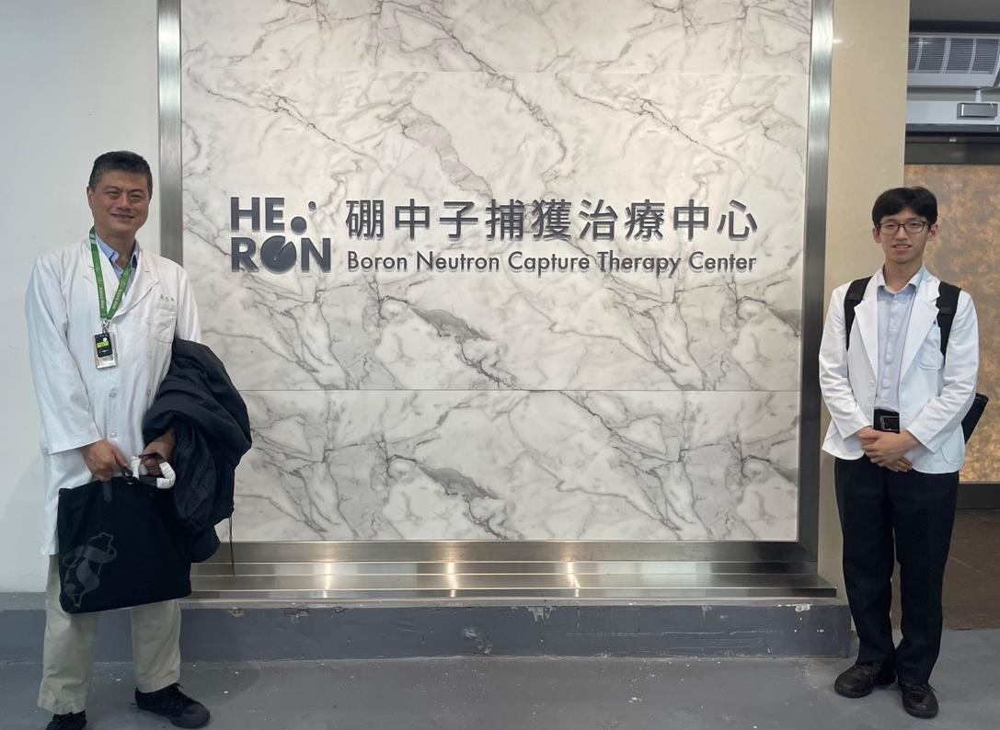
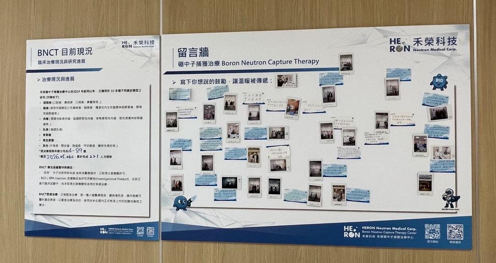
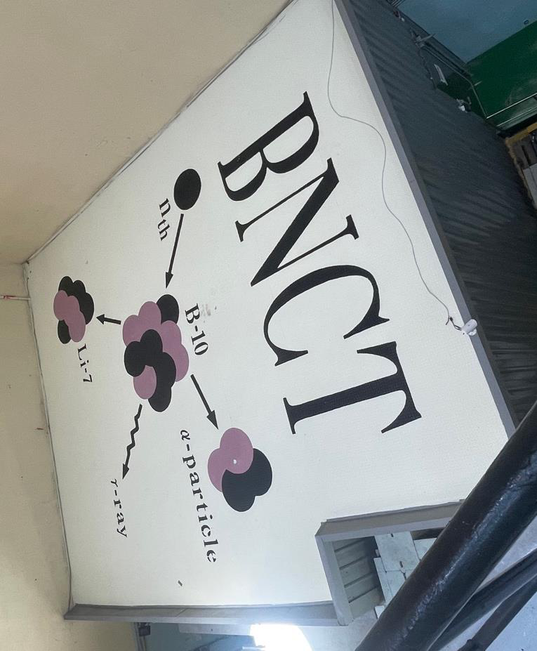
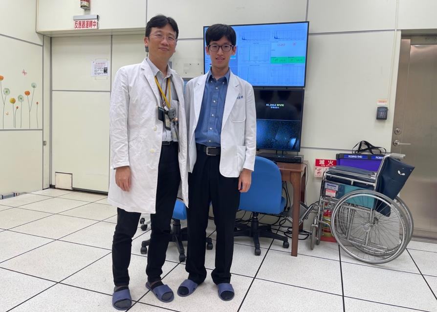
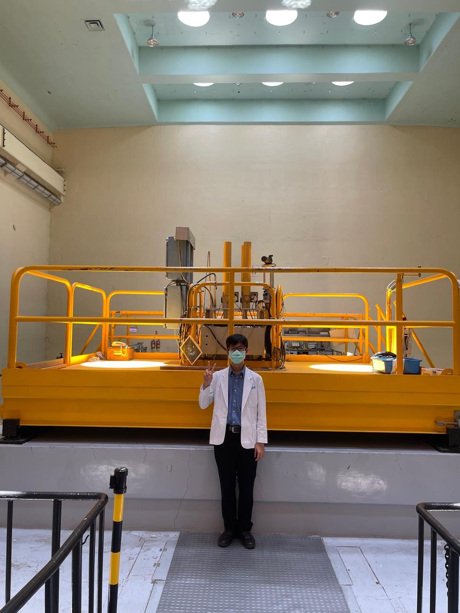
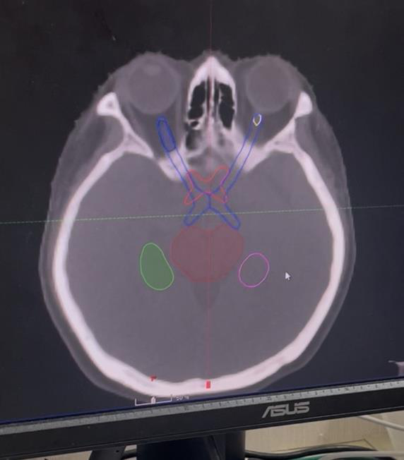
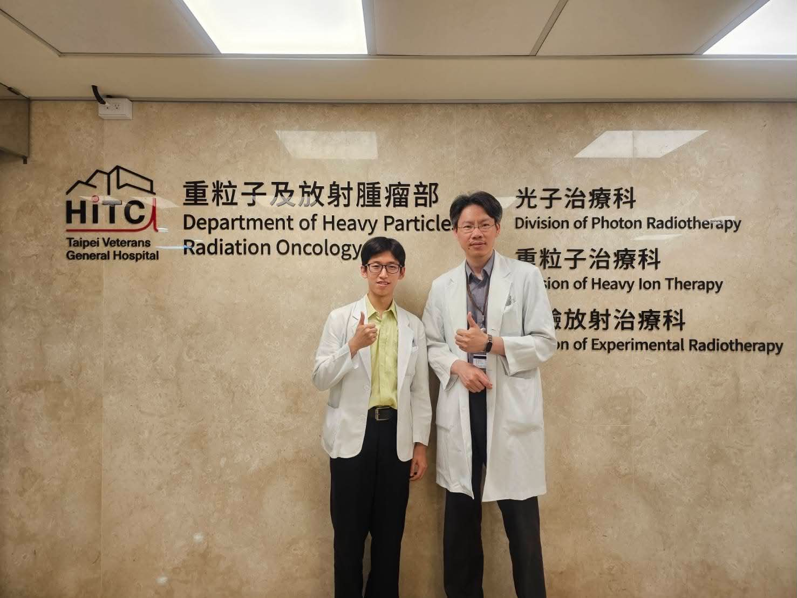
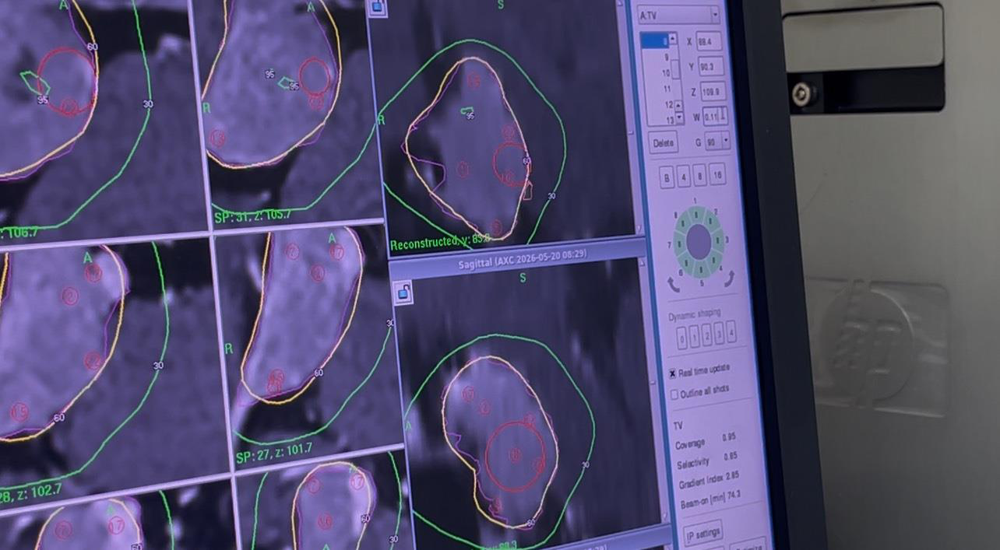
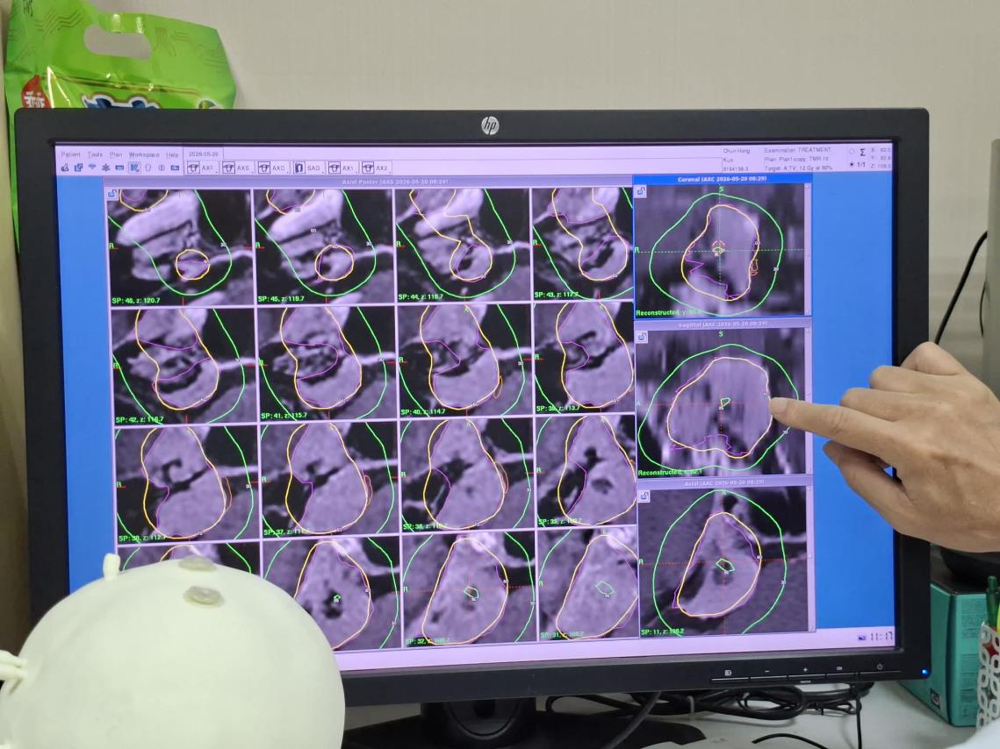
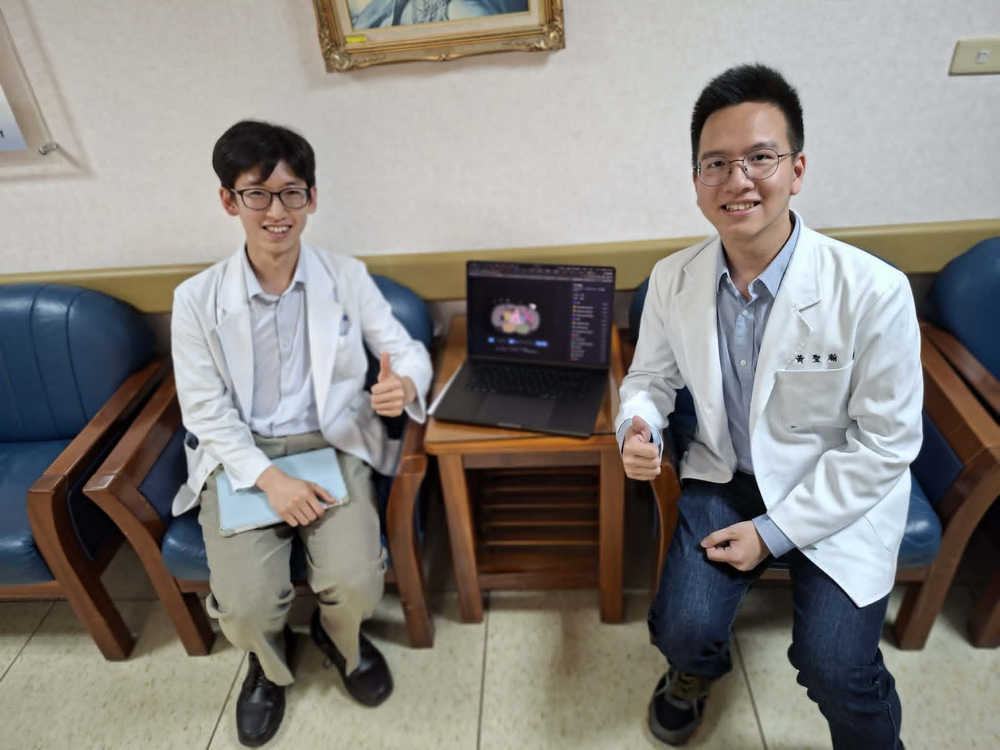

BNCT — 二元治療的細胞級精準消融



臨床適應症選擇
在臨床應用上，硼中子捕獲治療（BNCT）因其二元治療（含硼藥物 + 中子束）帶來的細胞級精準消融特性，被視為一種比碳離子更為精準的「超重粒子治療」。根據老師臨床經驗與台灣癌症聯合會（TJCC）相關文獻，BNCT 對下列局部腫瘤表現顯著治療優勢：
- Melanoma（本次實際觀摩之案例：雷女士）
- Sarcoma
- Meningioma
- 眼睛局部腫瘤
因其局部精準治療的本質，並不適合用於第 4 期已發生晚期全身轉移的癌症患者。目前新竹中國附醫與禾榮科技合作，已成為台灣推動 ABNCT 的重要基地，並針對符合條件的特定重症患者提供恩慈療法申請管道。
治療時序流程與關鍵生理參數
BNCT 的標準臨床操作流程具備高度的動態性與時效嚴謹性。病患在治療當日的標準時序：
T/N ratio 主要用途在於推測患者預後與治療效果，並不直接影響實際 Treatment regimen 的擬定。真正核心是血中 Boron-10 實際濃度，與治療效果呈正相關。
物理限制與 NCEPT 前沿技術
儘管 BNCT 具備細胞尺度精準度，但其最大物理限制在於治療深度不足。中子不具備 Bragg peak，深部腫瘤照射時會對表淺正常組織造成累積性傷害。
Neutron Capture Enhanced Particle Therapy：將傳統放射源（中子）更換為具優異深度劑量分布的 Proton 或 Carbon ion。但質子／碳離子撞擊誘發之「中子通量」可能遠不如直接使用中子源，是否會削弱腫瘤內硼核分裂療效，仍是該技術急需克服的隱憂。
臨床不良反應與護理
Radiation Dermatitis
因中子穿透淺層組織之特性，發生率極高，臨床表現多類似 Grade 1-2 Skin burn。
護理：3M Cavilon 噴霧進行皮膚屏障保護。
Hematuria (BPA Reaction)
患者注射含硼藥物（BPA）後，約有 1% 機率出現短暫血尿。
臨床上需予以留意與監測。
BNCT 清大原子爐 — 跨足胸腔的歷史性一步
過去 BNCT 臨床應用幾乎完全局限於「頸部以上」的頭頸癌或腦癌治療。本次觀摩的三例個案，標誌著該技術正式跨足「頭頸以下及胸腔病灶」的新里程碑。


深處 Glioblastoma Multiforme — 高風險抉擇
此個案在臨床處置上面臨極大挑戰：腫瘤位於深處，照射過程中若發生身體移動可能被迫直接終止治療。儘管已預防性給予 Steroids 與 Avastin 控制，但 BNCT 引發的急性 IICP 與 Brain edema 仍具高度不可預期性。家屬態度依舊非常積極，強烈爭取治療機會。
Scalp Fibrosarcoma 侵犯顱內 — 二次加強治療
相較於前述腦癌個案，本個案解剖位置相對表淺，利於中子劑量的堆疊；更重要的是，病患本身配合度極高，大幅降低術中移動而導致治療中斷的風險。
第四期乳癌全身轉移 — 多病灶劑量調配
醫療團隊將主要標靶鎖定在「左乳癌」與「左側腋下淋巴結」直接照射；至於位置較深的縱隔腔淋巴結，物理師採取創新思維：策略上不刻意單獨瞄準，而是利用前述兩個主要病灶照射時延伸擴散的 Scatter / Residual dose 順帶治療。
乳癌作為 BNCT 新適應症的學理基礎
乳癌生物學上屬於高度 Heterogeneous tumor，傳統全身性化學治療或標靶藥物效果有限。特別是針對預後極差且缺乏有效標靶的 Triple-negative 病患，臨床上藥物選擇極度稀少。BNCT 利用細胞尺度進行重粒子捕捉的標靶放射治療，或許能精準摧毀腫瘤細胞而不受限於全身性藥物的耐藥性。
胸腔治療的物理學博弈
傳統 Photon Therapy
治療左側乳癌時，光子線極易波及後方心臟組織。
必須精準設限，避免射線導致 LAD 硬化，造成長期心血管副作用。
BNCT 進軍胸腔
國際數據真空 — 完全沒有 BNCT 中子束對胸腔關鍵器官（心臟、血管、肺部）輻射劑量影響與組織耐受度的歷史數據。
本次治療計劃劑量為未來建立指引開創了第一步。
CT 模擬定位 — 以病人為中心的臨床應變
在放射治療整體流程中，CT 模擬定位是至關重要的一環，其核心目的在於精準模擬並固定病人實際接受放射治療時的正確姿勢。在臨床實務中，定位姿勢的設計與病人的安全舒適之間必須取得平衡。
個案應變的三種典型
RCC Spine Mets — 姑息治療不做固定模具
因病情嚴重已無法坐立，考量到此次放療屬於姑息性 Palliative RT，在兼顧患者舒適度與時效性的原則下，團隊決定不另外製作固定模具。
熱塑型面具製作中躁動 — 情緒安撫
急需放射治療的腦癌病患，在製作熱塑型面具的過程中出現躁動不安現象，醫療團隊不得不先中斷定位流程，並由家屬（丈夫）在旁陪伴安撫。突顯情緒安撫與病人安全同樣重要。
Lt Groin Synovial Sarcoma — 特殊擺位 + Contrast
腫瘤生長在大腿內側且極為接近陰囊，定位時需特別將大腿外旋翻開以避開重要器官；同時需注射 Contrast 提高腫瘤與周邊組織對比度，使邊界更加清晰。
特殊醫材與呼吸調控
術後放療常使用發泡固定模具（Alpha-Cradle）穩定身體，並搭配 4D-CT：在「吸氣」與「呼氣」兩 Phase 各掃描一張 CT。優先選用「吸氣時相」影像，因為吸氣時能有效拉開胸壁與心臟距離，給予物理師更高彈性的射線入射角度，顯著減少心臟毒性，避免造成不可逆的心臟纖維化。
鐵絲
放置於體表上作為後續物理師製作治療計畫圖時的 Reference point。
鉛塊（保留使用情境）
多數已被 MLC 取代，但特殊情境仍用：
- Keloid 進行 Electron beam 治療
- 部分表淺乳癌治療
Contouring 與器官保護 — 三軸臨床思維
PTV Margin 的標準化規範
若針對 Scalp SCC 等皮膚表面腫瘤治療，為提高表面劑量，必須在 Simulation 階段先放置 Bolus，以確保劑量釋放趨勢圖符合預期。
胸腔與上腹部：心肺毒性控制
胰臟鄰近多個中空器官，規劃時必須將大腸、小腸、肝臟、胃列為關鍵保護器官；必須嚴格限制這些空腔器官的受照劑量，以防止後期發生嚴重穿孔或潰瘍併發症。
針對早期（Stage I-II）NSCLC 進行 SBRT 時，必須特別留意心臟次結構的劑量防護。文獻（PubMed: 28476219）指出，LLL CA 病患在 SBRT 後，Heart substructures 所接受的劑量與 Non-cancer death 具高度相關性。臨床勾畫時必須小心保護 SVC 與 LA 等高風險 substructure。
若病患正服用標靶藥物 Osimertinib (Tagrisso)，在放療開始前必須停藥至少 3 天，否則兩者併用將大幅提高 Radiation Pneumonitis 的發生機率。
CNS 腫瘤：多模態影像融合
針對惡性度極高的 GBM，除常規影像外，臨床上可建議病人自費加做 Amino Acid PET Scan，對精準定義腫瘤生物活性邊界有極大臨床輔助價值。
利用 T1 hypoenhancement 影像特徵精確標記腦轉移病灶位置。為維護神經認知功能，臨床抓 0.5 cm margin 作為 Hippocampus Avoidance Zone；若未進行海馬迴保護，病患短期記憶力通常在放療後 4 個月內降至最低點，隨後才緩慢改善。
Skull Base Meningioma — MRI 序列分工
神經結構勾畫
對神經結構顯像較清晰，主要勾畫 Optic Nerve、Chiasm、Optic Tract
血管結構
觀看血管結構較清楚，精準勾畫 Internal Carotid Artery，避免劑量過高引發 Vascular Stenosis、缺血性中風或 Moyamoya Syndrome
內分泌保護
適合勾畫 Pituitary Gland 以保護內分泌功能
惡性度評估
High Signal = 高細胞密度高惡性度；反之則臨床上可考慮適度降低治療劑量
先讓病患頭部往前 Flexion 15 度。此動作旨在改變放射線束的入射角度，藉此有效減少 Lens 的暴露劑量，進而降低病患術後發生 放射性白內障 的風險。
GTV / CTV / PTV / ITV — 精準放療的基石
肉眼可見腫瘤體積
透過肉眼或影像學（CT、MRI）能明確觀測到的主腫瘤範圍
+ 隱性微轉移
主腫瘤 + 周邊可能延伸、肉眼不可見的 micro-metastasis；通常 GTV 再外擴 1-2 cm
放腫科專屬
涵蓋每日 Setup error 等不確定性所衍生的外擴範圍
內部目標體積
呼吸、器官蠕動引發的腫瘤位移範圍，獨立切分後 PTV 即可專注於擺位誤差
骨盆腔器官運動 — 攝護腺癌 vs 子宮頸癌
攝護腺癌 — 硬橋與直腸氣球的物理學
攝護腺位置非常容易受到前方膀胱尿液累積、後方直腸糞便與氣體充填的推擠。在光子治療中，若透過影像導引發現攝護腺被直腸氣體往前推歪，醫療團隊可透過調整治療床將病灶硬拉回照射計畫中心，即所謂的「硬橋」。
硬橋只適用於光子，因光子對路徑場與穿透厚度敏感度低，干擾僅數個百分比；但粒子治療（質子、碳離子）絕對禁止使用硬橋，因粒子對路徑場與物質厚度極為敏感。
部分醫療中心（如台大醫院）採取更積極的侵入式控制 — 在直腸置入 Rectal Balloon。這雖會強迫直腸前壁貼近攝護腺，但能固定直腸體積，使形變量與位移量大減。胡醫師補充：直腸被撐開後管壁張力變大、血管被壓扁，可能造成周邊正常組織短時間輕微缺血缺氧。在放射生物學上，正常組織若在照射時缺氧，其所受到的輻射傷害與副作用反而會減輕。
子宮頸癌 — 每日計畫選擇
子宮在骨盆腔內擺動往往是 random 且幅度巨大。若當天影像顯示子宮甩得太厲害，通常會先放棄當天治療，祈禱隔天器官能轉回原位；若連續數日異常，則必須重新安排 CT 模擬並重做計畫（但需注意重做計畫的時間不可拖延太長，以免觸發腫瘤細胞增殖的 repopulation 效應）。
初始做計畫時就預先做好 3 到 5 組針對不同子宮傾斜位置（前倒、後倒、中立...）的照射計畫，每天影像對位後看器官型態最像哪一組就套用哪一組。
呼吸運動管理 — 從便宜到極端的五種手段
呼吸引發的器官運動主要影響肺下葉、橫隔膜下方的肝臟與胃部，動態位移有時高達 2-3 公分。若不採取任何管理手段而硬去包覆完整 ITV 範圍，將導致大量無辜正常組織吃足輻射劑量。
- Abdominal Compression — 臨床最便宜且最受歡迎。外部物理施壓限制腹部起伏，將兩三公分位移硬壓到 0.5-1 cm。當呼吸幅度受限時，人體生理會自動以「提高呼吸頻率（變快）」維持正常氣體交換。
- Respiratory Gating — 持續監測呼吸週期，唯有當肺部體積或腫瘤移動到預設視窗時才觸發射線發射。碳離子治療 因精準度要求極端嚴苛而常搭配；光子治療雖也有此技術，但拉長每日治療時間，普遍較不受歡迎。
- Real-time Tracking — 在腫瘤內部打入金屬標記（marker / fiducial），利用高頻 X-ray 偵測標記物位置（如 CyberKnife），或連動治療床動態追著腫瘤跑。
- DIBH / Active Breathing Control (ABC) — 利用 Hyperventilation 在短時間內連續深呼吸將體內 CO₂ 濃度洗到很低；即便是乳癌病人或未經訓練的正常人，在陸地上皆能輕鬆憋氣 1.5-2 分鐘。
- High Frequency Oscillatory Ventilation (HFOV) — 目前最極端且具侵入性。先全身麻醉，連接特殊高頻震盪呼吸器（>300/min），在肺泡組織還來不及擴張與縮小前就完成換氣，創造心臟繼續跳動但雙肺完全靜止的奇特生理狀態。
潛水時若過度換氣，可能會在體內 CO₂ 尚未高到觸發呼吸反射前，氧氣分壓就先降到昏迷臨界點，導致病人在水中直接失去意識而溺斃；但在治療床上昏倒只會重啟自動呼吸，相對安全。
運用 HFOV 在麻醉科密切配合下讓肺部完全靜止，一次將病人肺部多達 15-20 顆轉移瘤打完。
On-line Adaptive Radiotherapy (ART)
病人躺在治療床上完成當日影像掃描後，若發現腫瘤位移或周邊器官形變，醫療團隊當天當場在床上自定義畫圖、馬上重新做 Planning、立刻線上 approve 並直接發射治療。
必須在床上幾分鐘內搞定，否則病人躺太久，中途直腸可能又產生新脹氣、膀胱尿液增加，導致位置再度跑掉，變成無解的惡性循環。此外面臨累積劑量加總的萬年難題 — Deformable Image Registration 傳統演算法效果普通，目前頂尖團隊正導入 AI 優化。
鼻咽癌實際案例 — Staging 盲點與 MR 判讀
Clinical Staging 的特殊性
放腫科繪圖習慣中，RP Node 通常直接併入 GTV_T，因為傳統影像與解剖預後上，RP Node 轉移與原發腫瘤往旁的 parapharyngeal extension 難以明確切分。
影像科報告 N2 → 應為 N1
影像科報告描述「left RP Node 有問題，right neck level 2 淋巴結有問題」，據此給予 N2 分期。
吳醫師指出這是跨團隊會議疏忽：根據 AJCC 鼻咽癌分期規範，RP Node 在分期定義中不具 lateralization。不論病人 RP Node 是單側還是雙側，只要合併的僅是單側頸部淋巴結轉移（如本案右側 Level 2），分期上依然只能歸類為 N1。必須兩側頸部皆有淋巴結轉移才能判定為 N2。
MR 影像判讀技巧
Primary Tumor 主力
健康骨頭因 fat suppression 而呈黑色，Enhanced tumor 則呈白色，對比強烈
骨侵犯偵測
正常骨頭骨髓呈非常明亮白色；若交叉比對發現原本明亮的訊號變黑且顯影，代表 Skull base bone invasion (≥ T3)
細微 LN 判讀
血管在 T1+C 可能流速偽影；T2 下血管一路黑、肌肉偏黑、真正轉移 LN 呈均勻「灰色」
化療前後比對 · 寧可錯殺原則
該個案腫瘤原發於 posterior choana 附近，曾嚴重擠壓耳咽管開口導致中耳積水，一開始大得像顆擋路的石頭。接受數輪 Induction Chemotherapy 後，最新影像顯示已顯著消退，兩側鼻咽腔幾近對稱。
面對化療後肉眼病灶幾乎消失的個案，放腫科秉持「寧可錯殺」原則 — 因為醫師清楚知道腫瘤最初的「殘骸與遺跡」落在哪裡。對於懷疑有 Multi-focus 的鼻腔與鼻咽區域，會毫不手軟地給予基本劑量包覆，以最大程度降低局部復發風險。
上排牙齒若有金屬植入物（植牙、假牙）會造成極為嚴重的磁場扭曲，T1+C 畫面便產生「黑洞、力場扭曲」般的空洞（by 胡醫師）。
MRI 與 CT 融合的脖子角度限制
病人 CT 定位時被強制要求仰頭（將視神經與眼球拉到水平方向、遠離鼻咽高劑量區）；而 MRI 通常只是放鬆平躺，脖子角度相對較低。導致兩套影像脖子角度完全不對稱 — 頭部對得越準，脖子就越歪，三維空間中不可能同時精確對準。實務妥協：優先以頭部病灶為主對位，脖子部分由放腫醫師隨後在 CT 上手動修正。
時代的眼淚 · 2D 放療 vs IMRT
2D 放療時代
定位僅仰賴正、側兩張平面 X 光片。熟練的放腫醫師憑藉解剖學的極致理解，在兩張 X 光片上進行高度「腦補」，直接勾勒出照野，僅需 10 分鐘就能畫完一個鼻咽癌個案。
3D / IMRT / VMAT 時代
CT、MRI 逐層精細融合，正常組織輻射副作用急劇降低，但臨床醫師必須在電腦前耗費數倍甚至數小時逐層精雕細琢，有時花了大半天連半個 NPC 都還沒畫完。
頸部淋巴結分區 — 解剖與引流的動態觀

Level 1-6 分區邊界
- Level 1A (Submental)：下巴前方正中央
- Level 1B (Submandibular)：兩側圍繞下頜下腺
- Level 2-4：SCM 覆蓋的骨幹區域，傳統以舌骨與環狀軟骨下緣作為上下切線
- Level 5：頸後三角，SCM 後緣之後未被肌肉覆蓋的區域
- Level 7：定義爭議，各流派文獻歧異甚大，引用必須註明出處
口腔癌等頭頸癌通常不常規照射 Level 5；但 NPC 極易向後侵犯至 Level 5，因此必須常規包覆。
NPC 病患在接受 2、3、4 區放療半年至一年後，原本微小的 Level 1A 和 1B 淋巴結往往會代償性變大。這是因為主淋巴通路受放療影響引流不順，淋巴液被迫改走 1A 這些原本流量小的「替代道路」所致。人體解剖與生理引流是動態的，不能只死背靜態影像。
唾液腺保護 — 2D 對比 IMRT
2D 時代
為讓中央 NPC 腫瘤與兩側 LN 得到足夠劑量，整條唾液腺暴露在 >7000 cGy 高劑量夾攻下，老一輩病人治完後終生深受 Xerostomia 所苦。
IMRT 時代
精準腮腺與下頜下腺包覆與劑量 Sparing，甚至限制整個口腔的平均劑量。看著影像上精準的劑量線，在殺死腫瘤的同時守護病人的生活品質。
骨侵犯的兩種影像模式
Osteolytic Lesion
腫瘤活化食骨細胞，直接把骨頭「咬掉一塊」
CT：骨質缺損
T1 contrast：健康白訊號整片黑掉
NPC 個案以此類表現較多
Osteoblastic Lesion
骨頭受腫瘤刺激，成骨細胞瘋狂反應抵消
影像：白白密密麻麻一片
治療後極短時間內看到大片骨頭變白，通常代表治療前就已是 osteoblastic（osteolytic 後骨頭修補速度沒那麼快）
顱底解剖 · NPC 入侵孔洞
影像對位與 AI 勾畫現況
影像對位技術從早期手動 Point-to-Point，演進到如今最常用的 Rigid Auto-Registration。自動對位非常仰賴 Initial value 與 Bounding box 設定 — 本質是優化求解問題，若初始偏差太大，系統會卡在區域錯誤的死胡同裡。對位完成後，要利用滾輪切換三個切面，以內耳、耳蝸、視交叉、海綿竇等微細結構的對齊度，作為達到「90 分以上」的關鍵指標。
院內主流系統多以 CT 影像為基礎訓練。對 OAR（腦幹、腮腺）或影像對比明顯的腦轉移病灶表現不錯；但面對高度依賴 MR 才能看清的微細神經構造（視神經、視交叉、三叉神經），因 AI 沒學過 MR 資料，在 CT 上常流於「盲猜」或「亂畫」（如將眼外肌誤認，或視交叉畫得過大或位置不對）。
LQ Model 與 SIB — 劑量數學的臨床轉換
Linear-Quadratic Model
臨床常兩邊同除以 β，利用 α/β ratio（組織特定常數，腫瘤或正常組織的耐受度）來進行不同分次劑量的等效轉換。
臨床劑量轉換實例
- 傳統 Sequential：總劑量 70 Gy / 35 次 / 單次 2 Gy
- 新式排程：縮短為 33 次。維持完全相同生物等效效應，LQ model 解出單次劑量約需 2.1 Gy（33 × 2.1 = 69.3 Gy）
- 臨床湊整實務：為避免其他科室誤解，仍會直接將 Primary tumor 湊滿 70 Gy。目前放療技術提升，多補這點劑量對正常組織副作用並無顯著增加
SIB · Simultaneous Infield Boost
美國又稱 "Paint"。傳統 Sequential 是先照大範圍、再縮小範圍分段執行（前 25 次大範圍，後續逐步縮小）。SIB 則是「大、中、小範圍在同一個治療計畫、同一個工作天內一起執行」。
33 次排程內的劑量分層
| Risk Tier | Volume | 單次劑量 | 總劑量 |
|---|---|---|---|
| High Risk | GTV / CTV-H | 2.12 Gy | 70 Gy |
| Intermediate | CTV-M | 1.8 Gy | 59.4 Gy |
| Low Risk | CTV-L | 1.6 Gy | 52.8 Gy |
SIB 的四大臨床優勢
- 保護正常組織：分開多個計畫做，疊加後邊緣容易爆掉；SIB 整體劑量分布更精緻漂亮
- 契合電腦優化演算法：在逆向計畫（IMRT）中，電腦對 SIB 這種有劑量梯度差的疊加計畫，跑出來最順、最優化
- 無縫 Adaptive RT：同一天給予高低劑量，切換新舊計畫時具高度彈性
- 簡化物理師工作量：減少需要製作的計畫總套數
FDG-PET 的局限性
FDG-PET 本質利用葡萄糖代謝率偵測，因此下列情況容易出現 False Negative：
- 分化良好 / 生長緩慢腫瘤：如 Low-grade prostatic cancer、Low-grade Sarcoma — 代謝接近正常細胞，可能不亮
- 腦部腫瘤（如 GBM）：並非腦瘤不吃葡萄糖，而是腦部正常背景訊號本身就極度旺盛非常亮，導致病灶對比度不足

Gamma Knife — 劑量梯度的藝術
瑞典神經外科醫師 Leksell 對立體定位手術觀念的跨界延伸 — 將實體針頭替換成放射線，從多個角度射入並在中心交會，便能創造出威力強大的「交叉火網」。


物理演進與 Co-60 集束
傳統放療中，放射線進入人體表層時劑量最高，隨後慢速下降，導致深部腫瘤尚未得到足夠能量前，表層正常組織早已過度曝露。Leksell 的創舉：透過三個角度交叉，各路射束便僅需分擔三分之一的劑量；現今系統利用核反應爐製造的 Co-60 作為放射源，劃分為 8 個 Sectors、總計部署 192 顆。100 多條射束全面向中心聚焦時，中心腫瘤劑量瞬間堆疊放大，外圍承受的單一劑量則大幅稀釋。
陡峭劑量梯度的腫瘤體積上限
Gamma Knife 之所以能在臨床上有效降低 Complication，核心關鍵就在於擁有一條極為「陡峭的劑量梯度」。但腫瘤體積過大時，Divergent 射束會使邊緣的劑量梯度變差，原先陡峭的高峰開始下降、邊緣模糊。腫瘤大小原則上不能超過 3 到 3.5 公分，否則劑量梯度的優勢將蕩然無存。
三大黃金評估指標
≥ 99%
處方劑量等高線（黃色區域）成功包覆腫瘤範圍的比例。對於良性腫瘤不盲目追求 100%，與惡性 CTV 追求 100% 的思維截然不同
Conformity Index
若為 0.76，意味黃色區域中 76% 屬於 Target，24% 為誤照正常組織。越接近 1 越完美，但受腫瘤異質性限制難達絕對 1
越小越好
量化劑量向外跌落的速度，如同懸崖的斜率。優化調校降至 2.5 屬極佳
堆樂高 · 權重優化藝術
Gamma Knife 配有不同直徑的準直器（16mm、8mm、4mm）：
- 大尺寸：一次涵蓋大範圍、大幅節省治療時間，但邊緣粗糙
- 小尺寸（4mm）：像畫筆般極其精細地貼合腫瘤崎嶇邊緣
這個過程就如同「堆樂高」一般，醫師必須思考如何最有效率地運用不同大小的積木，去完美拼湊出腫瘤的立體形狀。
為消弭 Hot spot 並避開周邊正常組織，醫師必須不斷調整每個 Shot 的三維座標（XYZ 軸），或精準「拼掉」那些有一半越界照到正常組織的無效射束。透過調整射束權重（W）— 改變每個點給予的放射劑量比重 — 能有效將多餘劑量從邊緣移開（例如將梯度值從 2.96 成功壓低至 2.71）。這是一門牽一髮動全身的拉鋸藝術，任意調動一個點的權重都會引發全局 Normalization，稍有不慎便會在其他區域意外引發新的 Hot spot。
伽瑪刀的核心臨床價值
傳統 Whole Brain RT
動輒需要兩個禮拜，病患必須反覆往返醫院煎熬
對 Cognitive function 損傷較大
Gamma Knife SRS
一天（單次）即可完成的手術
核心初衷並非單純延長存活時間，而是讓正常腦組織散射劑量降到最低，將對 Cognitive function 的損傷減至最少
無論良性腦瘤或多發性 Brain mets 皆適用
「在當代神經醫學中，Gamma Knife 扮演了捍衛患者生活品質與大腦功能的關鍵要角。」
結業合影
